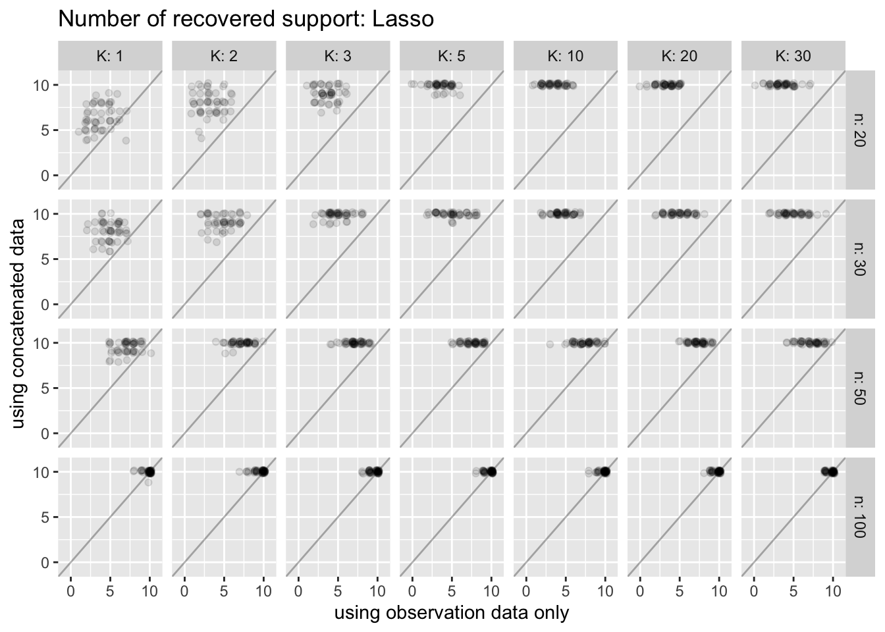
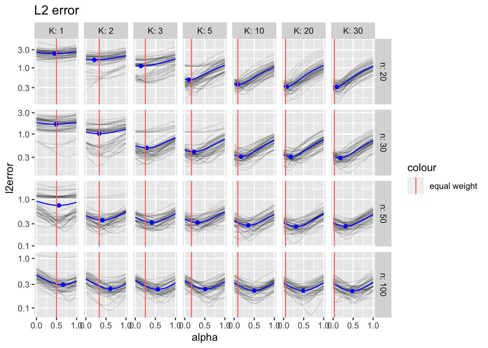
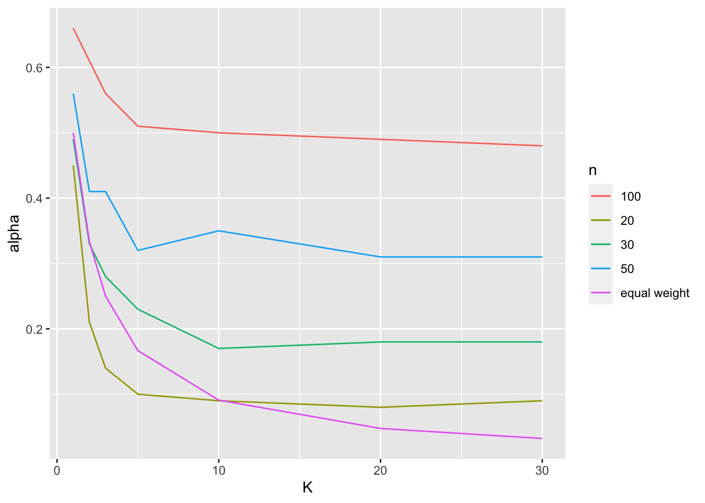
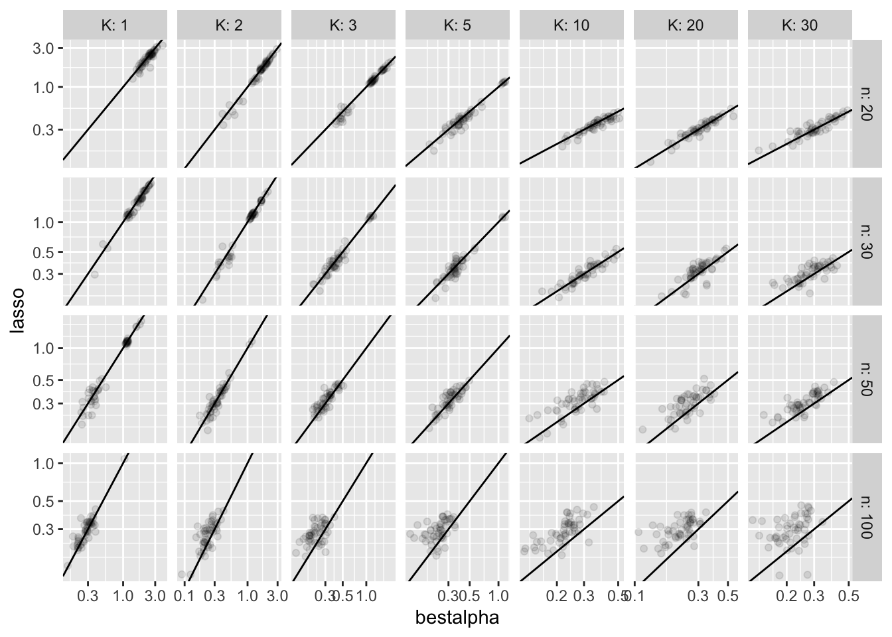

Last updated: 2020-03-29
Checks: 7 0
Knit directory: tlcf/
This reproducible R Markdown analysis was created with workflowr (version 1.6.0). The Checks tab describes the reproducibility checks that were applied when the results were created. The Past versions tab lists the development history.
Great! Since the R Markdown file has been committed to the Git repository, you know the exact version of the code that produced these results.
Great job! The global environment was empty. Objects defined in the global environment can affect the analysis in your R Markdown file in unknown ways. For reproduciblity it’s best to always run the code in an empty environment.
The command set.seed(20200324) was run prior to running the code in the R Markdown file. Setting a seed ensures that any results that rely on randomness, e.g. subsampling or permutations, are reproducible.
Great job! Recording the operating system, R version, and package versions is critical for reproducibility.
Nice! There were no cached chunks for this analysis, so you can be confident that you successfully produced the results during this run.
Great job! Using relative paths to the files within your workflowr project makes it easier to run your code on other machines.
Great! You are using Git for version control. Tracking code development and connecting the code version to the results is critical for reproducibility. The version displayed above was the version of the Git repository at the time these results were generated.
Note that you need to be careful to ensure that all relevant files for the analysis have been committed to Git prior to generating the results (you can use wflow_publish or wflow_git_commit). workflowr only checks the R Markdown file, but you know if there are other scripts or data files that it depends on. Below is the status of the Git repository when the results were generated:
Ignored files:
Ignored: .Rproj.user/
Untracked files:
Untracked: analysis/temp.Rmd
Untracked: test.txt
Unstaged changes:
Modified: analysis/index.Rmd
Modified: code/wflow_commands.R
Note that any generated files, e.g. HTML, png, CSS, etc., are not included in this status report because it is ok for generated content to have uncommitted changes.
These are the previous versions of the R Markdown and HTML files. If you’ve configured a remote Git repository (see ?wflow_git_remote), click on the hyperlinks in the table below to view them.
| File | Version | Author | Date | Message |
|---|---|---|---|---|
| Rmd | 2a75053 | Joonsuk Kang | 2020-03-29 | AltMin and noisy parameter model analysis |
For model description, check altmin_ideas
When parameter noise is shared for all the simulations: \(\delta_1=\delta_2,\dots,\delta_K\)
Simulation result with non-shared, simulation-specific noise parameter \(\delta_k\): noisyparam_sim
library(glmnet); library(tictoc); library(tidyverse)Loading required package: MatrixLoaded glmnet 3.0-2── Attaching packages ─────────────────────────────────────────────────────────── tidyverse 1.3.0 ──✓ ggplot2 3.3.0 ✓ purrr 0.3.3
✓ tibble 2.1.3 ✓ dplyr 0.8.4
✓ tidyr 1.0.2 ✓ stringr 1.4.0
✓ readr 1.3.1 ✓ forcats 0.5.0── Conflicts ────────────────────────────────────────────────────────────── tidyverse_conflicts() ──
x tidyr::expand() masks Matrix::expand()
x dplyr::filter() masks stats::filter()
x dplyr::lag() masks stats::lag()
x tidyr::pack() masks Matrix::pack()
x tidyr::unpack() masks Matrix::unpack()# set parameters
set.seed(773)
p=100; s=10; gamma=0.1
# function for simulation
#################################################################
calc_l2 <- function(n, K, p=100, s=10, gamma=0.1){
beta <- rep(0,p); support <- sort(sample(p,s)); beta[support] <- 1
# generate data
X <- array(rnorm(n*p*(K+1)), dim=c(n,p,K+1))
epsilon <- array(rnorm(n*p*(K+1)), dim=c(n,1,K+1))
delta <- array(0, dim=c(p,K+1))
delta[,2] <- gamma*diag(beta) %*% rnorm(n=p, mean=0, sd=1)
if(K>1){for (i in 3:(K+1)){ delta[,i] <- delta[,2]}}
Y <- array(0,dim=c(n,1,K+1))
for (i in 1:(K+1)){
Y[,,i] <- X[,,i] %*% (beta+delta[,i])+epsilon[,,i]
}
# concatenate
Xcon <- array(0, dim=c(n*(K+1),p))
Ycon <- array(0, dim=c(n*(K+1),1))
for (i in 1:(K+1)){
Xcon[((i-1)*n+1):(i*n),] <- X[,,i]
Ycon[((i-1)*n+1):(i*n),] <- Y[,,i]
}
# run lasso
fit0 <- glmnet(x=X[,,1], y=Y[,,1])
fit <- glmnet(x=Xcon, y=Ycon)
# find the first s predictors which became nonzero with gradually relaxing constraints
support_est <- sort(as.numeric(substr(names(sort(rowSums(fit$beta !=0),
decreasing=TRUE)[1:s]),2,100)))
support_est0 <- sort(as.numeric(substr(names(sort(rowSums(fit0$beta !=0),
decreasing=TRUE)[1:s]),2,100)))
# number of correct supports by lasso + concatenated data
n_correct <- length(intersect(support, support_est))
n_correct0 <- length(intersect(support, support_est0))
# estimator 1) lasso + concat + CV
cv.fit <- cv.glmnet(Xcon[,support_est], Ycon, type.measure = "mse", nfolds = 10)
beta_est1 <- rep(0,p)
beta_est1[support_est] <- coef(cv.fit, s = "lambda.min")[-1] # -1 excludes intercept
# estimator 2) weighted average of OLS estimators
beta_est2.0 <- rep(0,p)
beta_est2.0[support_est] <- coef(lm(Y[,,1]~X[,support_est,1]))[-1]
beta_est2.s <- rep(0,p)
beta_est2.s[support_est] <- coef(lm(Ycon[(n+1):(n*(K+1)),]~Xcon[(n+1):(n*(K+1)),support_est]))[-1]
# calculate L2 error
l2.est1 <- norm(matrix(beta-beta_est1), type="F")
alpha.grid <- seq(0,1,by=0.01)
l2.est2 <- rep(0,length(alpha.grid))
for (i in 1:length(alpha.grid)){
alpha <- alpha.grid[i]
l2.est2[i] <- norm(matrix(beta-(alpha*beta_est2.0+(1-alpha)*beta_est2.s)), type="F")
}
out.list = list(n_correct=c(n_correct0, n_correct),
l2=c(l2.est1, l2.est2))
return(out.list)
}
#################################################################
# make grid
n.grid <- c(20,30,50,100)
K.grid <- c(1,2,3,5,10,20,30)
iter <- 1:50
l2.grid <- expand_grid(n.grid, K.grid, iter)
n_correct.grid <- expand_grid(n.grid, K.grid, iter)
# run over the grid
tic()
for (i in 1:nrow(l2.grid)){
l2eval <- calc_l2(n=l2.grid$n.grid[i],K=l2.grid$K.grid[i])
n_correct.grid[i,4:5] <- l2eval$n_correct
l2.grid[i,4:105] <- l2eval$l2
}
toc() # 101.402 sec elapsed102.43 sec elapsedAlmost identical to the support recovery result in the general case with simulation run-specific \(\delta_k\)
data.frame(n_correct.grid) -> df.sr
colnames(df.sr) <- c('n','K', 'iter', 'n_correct0', 'n_correct')
df.sr %>%
ggplot(aes(x=jitter(n_correct0), y=jitter(n_correct)))+
geom_point(alpha=0.1)+geom_abline(slope=1, intercept=0, alpha=0.3)+
facet_grid(n~K, labeller=labeller(n=label_both, K=label_both))+
scale_x_continuous(breaks=c(0,5,10), limits = c(-1,11))+
scale_y_continuous(breaks=c(0,5,10), limits = c(-1,11))+
ggtitle("Number of recovered support: Lasso")+
xlab("using observation data only")+ylab("using concatenated data")
The optimal weighting scheme is drastically different here. For small \(n\), due to the intrinsic high variability in the estimator only based on observation data, the information based on simulation matters much. The optimal is almost identical to equal weighting when \(n=20\). However, for large enough \(n\), the information from simulation is less beneficial. That’s because as \(n\) increases, we can have more confidence that \(\hat{\beta}_0\) is close to the true \(\beta\), whereas we know that as the one realization of \(\delta\) governs the whole simulation data, the simulation-based estimator \(\hat{\beta}_s\) would converge to \(\beta+\delta\), which has a distribution \(N(\beta,\gamma BB^T)\). Thus, even if \(K\) is extremely high, it has only a marginal piece of information about the value of \(\beta\).
data.frame(n=rep(l2.grid$n.grid, times=101),
K=rep(l2.grid$K.grid, times=101),
iter=rep(l2.grid$iter, times=101),
alpha=rep(seq(0,1,by=0.01), each=nrow(l2.grid)),
l2error = unlist(l2.grid[,5:105], use.names=FALSE)
) -> df.temp
df.temp %>% group_by(n,K,alpha) %>%
summarise(meanl2=mean(l2error)) -> df.temp.meanl2
df.temp.meanl2 %>% group_by(n,K) %>% arrange(meanl2) %>% slice(1) -> df.temp.bestl2
df.temp %>%
ggplot()+geom_line(aes(x=alpha, y=l2error, group=iter), alpha=0.1)+
geom_line(data=df.temp.meanl2, aes(x=alpha, y=meanl2), col='blue')+
geom_point(data=df.temp.bestl2, aes(x=alpha, y=meanl2), col='blue')+
facet_grid(n~K, labeller=labeller(n=label_both, K=label_both), scales="free_y")+
scale_x_continuous(breaks=c(0,0.5,1))+scale_y_log10()+
geom_vline(aes(xintercept=1/(K+1), col="equal weight"))+
ggtitle("L2 error")
df.temp.bestl2 %>% ungroup() %>% mutate(n=factor(n)) %>%
ggplot()+geom_line(aes(x=K, y=alpha, group=n, col=n))+
geom_line(aes(x=K, y=1/(K+1), col="equal weight"))
Likewise, lasso performs impressively.
l2.grid[,1:4] %>%
rename(n=n.grid, K=K.grid, lasso=V4) -> df.temp2a
df.temp.bestl2 %>% select(-meanl2) %>%
inner_join(df.temp, by=c('n','K','alpha')) %>%
rename(bestalpha=l2error) %>% select(-alpha) %>%
inner_join(df.temp2a, by=c('n','K','iter')) %>%
ggplot()+geom_point(aes(x=bestalpha, y=lasso), alpha=0.1)+
geom_abline(slope=1,intercept = 0)+ scale_x_log10()+scale_y_log10()+
facet_grid(n~K, labeller=labeller(n=label_both, K=label_both), scales="free")
library(glmnet); library(tictoc)
# set parameters
set.seed(773)
p=100; s=10; gamma=0.1
# function for simulation
#################################################################
calc_l2 <- function(n, K, p=100, s=10, gamma=0.1){
beta <- rep(0,p); support <- sort(sample(p,s)); beta[support] <- 1
# generate data
X <- array(rnorm(n*p*(K+1)), dim=c(n,p,K+1))
epsilon <- array(rnorm(n*p*(K+1)), dim=c(n,1,K+1))
delta <- array(0, dim=c(p,K+1))
delta[,2] <- gamma*diag(beta) %*% rnorm(n=p, mean=0, sd=1)
if(K>1){for (i in 3:(K+1)){ delta[,i] <- delta[,2]}}
Y <- array(0,dim=c(n,1,K+1))
for (i in 1:(K+1)){
Y[,,i] <- X[,,i] %*% (beta+delta[,i])+epsilon[,,i]
}
# concatenate
Xcon <- array(0, dim=c(n*(K+1),p))
Ycon <- array(0, dim=c(n*(K+1),1))
for (i in 1:(K+1)){
Xcon[((i-1)*n+1):(i*n),] <- X[,,i]
Ycon[((i-1)*n+1):(i*n),] <- Y[,,i]
}
# calculate L2 error
alpha.grid <- seq(0,1,by=0.01)
l2.est <- rep(0,length(alpha.grid))
for (i in 1:length(alpha.grid)){
alpha <- alpha.grid[i]
fit <- cv.glmnet(x=Xcon, y=Ycon, type.measure="mse", nfolds=10,
weights=c(rep(1,n),rep(alpha,n*K)))
beta_est <- coef(fit, s = "lambda.min")[-1]
l2.est[i] <- norm(matrix(beta-beta_est), type="F")
}
return(l2.est)
}
#################################################################
# make grid
n.grid <- c(20,30,50,100)
K.grid <- c(1,2,3,5,10,20,30)
iter <- 1:50
l2.grid <- expand_grid(n.grid, K.grid, iter)
# run over the grid
tic()
for (i in 202:nrow(l2.grid)){
l2.grid[i,4:104] <- calc_l2(n=l2.grid$n.grid[i],K=l2.grid$K.grid[i])
}
toc() #
sessionInfo()R version 3.6.1 (2019-07-05)
Platform: x86_64-apple-darwin15.6.0 (64-bit)
Running under: macOS Catalina 10.15.3
Matrix products: default
BLAS: /Library/Frameworks/R.framework/Versions/3.6/Resources/lib/libRblas.0.dylib
LAPACK: /Library/Frameworks/R.framework/Versions/3.6/Resources/lib/libRlapack.dylib
locale:
[1] en_US.UTF-8/en_US.UTF-8/en_US.UTF-8/C/en_US.UTF-8/en_US.UTF-8
attached base packages:
[1] stats graphics grDevices utils datasets methods base
other attached packages:
[1] forcats_0.5.0 stringr_1.4.0 dplyr_0.8.4 purrr_0.3.3
[5] readr_1.3.1 tidyr_1.0.2 tibble_2.1.3 ggplot2_3.3.0
[9] tidyverse_1.3.0 tictoc_1.0 glmnet_3.0-2 Matrix_1.2-18
[13] workflowr_1.6.0
loaded via a namespace (and not attached):
[1] Rcpp_1.0.3 lubridate_1.7.4 lattice_0.20-38 assertthat_0.2.1
[5] rprojroot_1.3-2 digest_0.6.25 foreach_1.4.8 R6_2.4.1
[9] cellranger_1.1.0 backports_1.1.5 reprex_0.3.0 evaluate_0.14
[13] httr_1.4.1 pillar_1.4.3 rlang_0.4.5 readxl_1.3.1
[17] rstudioapi_0.11 whisker_0.4 rmarkdown_2.1 labeling_0.3
[21] munsell_0.5.0 broom_0.5.5 compiler_3.6.1 httpuv_1.5.2
[25] modelr_0.1.6 xfun_0.12 pkgconfig_2.0.3 shape_1.4.4
[29] htmltools_0.4.0 tidyselect_1.0.0 codetools_0.2-16 fansi_0.4.1
[33] crayon_1.3.4 dbplyr_1.4.2 withr_2.1.2 later_1.0.0
[37] grid_3.6.1 nlme_3.1-143 jsonlite_1.6.1 gtable_0.3.0
[41] lifecycle_0.2.0 DBI_1.1.0 git2r_0.26.1 magrittr_1.5
[45] scales_1.1.0 cli_2.0.2 stringi_1.4.6 farver_2.0.3
[49] fs_1.3.2 promises_1.1.0 xml2_1.2.2 vctrs_0.2.3
[53] generics_0.0.2 iterators_1.0.12 tools_3.6.1 glue_1.3.2
[57] hms_0.5.3 yaml_2.2.1 colorspace_1.4-1 rvest_0.3.5
[61] knitr_1.28 haven_2.2.0